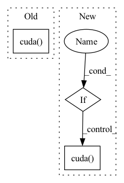

Pattern ID :1874

Before Change
else:
raise ValueError("Activation "{}" not supported.".format(args.activation))
self.cached_zero_vector = torch.zeros(self.hidden_size).cuda()
def forward(self, mol_graph: Tuple[torch.Tensor, torch.Tensor, torch.Tensor, torch.Tensor, List[Tuple[int, int]], List[Tuple[int, int]]]) -> torch.Tensor:
Encodes a batch of molecular graphs.
After Change
raise ValueError("Activation "{}" not supported.".format(args.activation))
self.cached_zero_vector = torch.zeros(self.hidden_size)
if args.cuda:
self.cached_zero_vector = self.cached_zero_vector.cuda()
def forward(self, mol_graph: Tuple[torch.Tensor, torch.Tensor, torch.Tensor, torch.Tensor, List[Tuple[int, int]], List[Tuple[int, int]]]) -> torch.Tensor:
Encodes a batch of molecular graphs.
In pattern: SUPERPATTERN
Frequency: 3
Non-data size: 3
Instances
Fragment ID: 4610254
Project Name: aamini/chemprop
Commit Name: 156e5cb1c36a827c0d7006c979138f033666ef41
Time: 2018-10-14
Author: swansonk.14@gmail.com
File Name: mpn.py
M Class Name: MPNEncoder
N Class Name: MPNEncoder
M Method Name: __init__(4)
N Method Name: __init__(4)
M Parent Class: nn.Module
N Parent Class: nn.Module
M File Name: mpn.py
N File Name: mpn.py
M Start Line: 20
M End Line: 100
N Start Line: 20
N End Line: 104
'>
Before Change
// if mask is needed, uncomment this
self.maxlen = 2048 // beyond this scale
self.mask = Variable(torch.tril(torch.ones(self.maxlen, self.maxlen)).view(1, 1, self.maxlen, self.maxlen), requires_grad=False)
if use_cuda:
self.mask.cuda()
self.n_head = n_head
self.c_proj = Conv1D(n_state, nx)
self.attn_dropout = nn.Dropout(attn_pdrop)
self.resid_dropout = nn.Dropout(resid_pdrop)
After Change
assert n_state % n_head == 0
// if mask is needed, uncomment this
self.maxlen = 2048 // beyond this scale
self.mask = Variable(torch.tril(torch.ones(self.maxlen, self.maxlen)).view(1, 1, self.maxlen, self.maxlen), requires_grad=False).cuda() if use_cuda else Variable(torch.tril(torch.ones(self.maxlen, self.maxlen)).view(1, 1, self.maxlen, self.maxlen), requires_grad=False)
self.n_head = n_head
self.c_proj = Conv1D(n_state, nx)
self.attn_dropout = nn.Dropout(attn_pdrop)
'>
Fragment ID: 4610255
Project Name: yale-lily/summertime
Commit Name: 3a7659bf94947c1540b3a628d4bbb58cbd44ce8e
Time: 2021-08-05
Author: troy.feng@yale.edu
File Name: model/third_party/HMNet/Models/Networks/Transformer.py
M Class Name: Attention
N Class Name: Attention
M Method Name: __init__(3)
N Method Name: __init__(3)
M Parent Class: nn.Module
N Parent Class: nn.Module
M File Name: model/third_party/HMNet/Models/Networks/Transformer.py
N File Name: model/third_party/HMNet/Models/Networks/Transformer.py
M Start Line: 128
M End Line: 136
N Start Line: 128
N End Line: 133
'>
Before Change
assert n_state % n_head == 0
// if mask is needed, uncomment this
self.maxlen = 2048 // beyond this scale
self.mask = Variable(torch.tril(torch.ones(self.maxlen, self.maxlen)).view(1, 1, self.maxlen, self.maxlen), requires_grad=False).cuda()
self.n_head = n_head
self.c_proj = Conv1D(n_state, nx)
self.attn_dropout = nn.Dropout(attn_pdrop)
self.resid_dropout = nn.Dropout(resid_pdrop)
After Change
// if mask is needed, uncomment this
self.maxlen = 2048 // beyond this scale
self.mask = Variable(torch.tril(torch.ones(self.maxlen, self.maxlen)).view(1, 1, self.maxlen, self.maxlen), requires_grad=False)
if use_cuda:
self.mask.cuda()
self.n_head = n_head
self.c_proj = Conv1D(n_state, nx)
self.attn_dropout = nn.Dropout(attn_pdrop)
self.resid_dropout = nn.Dropout(resid_pdrop)
'>
Fragment ID: 4610252
Project Name: yale-lily/summertime
Commit Name: aef01b4fb2e193dc36eb9a9819349bbd4d92eeab
Time: 2021-08-05
Author: troy.feng@yale.edu
File Name: model/third_party/HMNet/Models/Networks/Transformer.py
M Class Name: Attention
N Class Name: Attention
M Method Name: __init__(3)
N Method Name: __init__(3)
M Parent Class: nn.Module
N Parent Class: nn.Module
M File Name: model/third_party/HMNet/Models/Networks/Transformer.py
N File Name: model/third_party/HMNet/Models/Networks/Transformer.py
M Start Line: 132
M End Line: 132
N Start Line: 128
N End Line: 140